About me
I'm the eldest daughter in an Asian family. Problem solving is in my bones. If you come to me with a problem, I will sit with you until we have a solution and at least two backup plans. (I am trying to practice just listening, I promise)
I love exploring, whether it's new ideas, places, hobbies or cuisines. In fact, exploring is what got me here.
I read this quote somewhere, “Design is a way of seeing the world. It’s not just a job; it’s kind of a lifestyle,” and I think it makes perfect sense when I think about my background. I don’t come from a traditional design path. I have worked in social media, customer success, and research labs as a biotechnologist, and every path I have explored taught me the skills I now use daily as a designer.
Me in a set of pictures
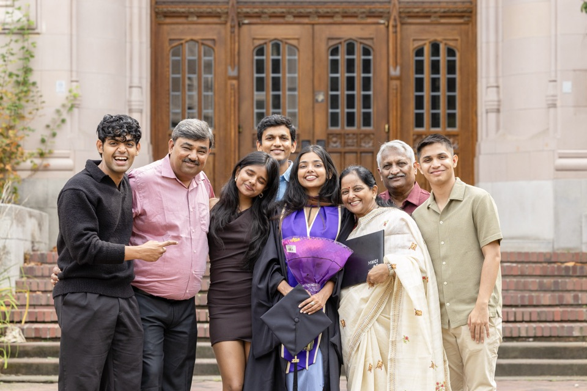
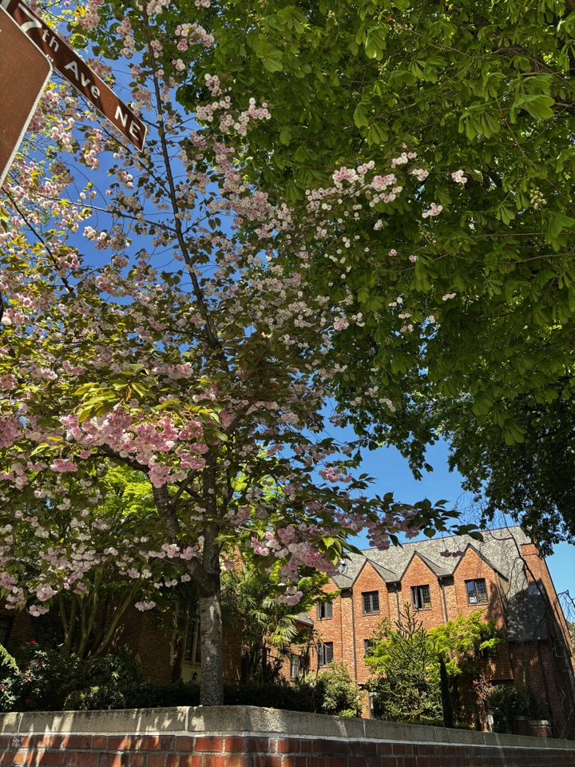
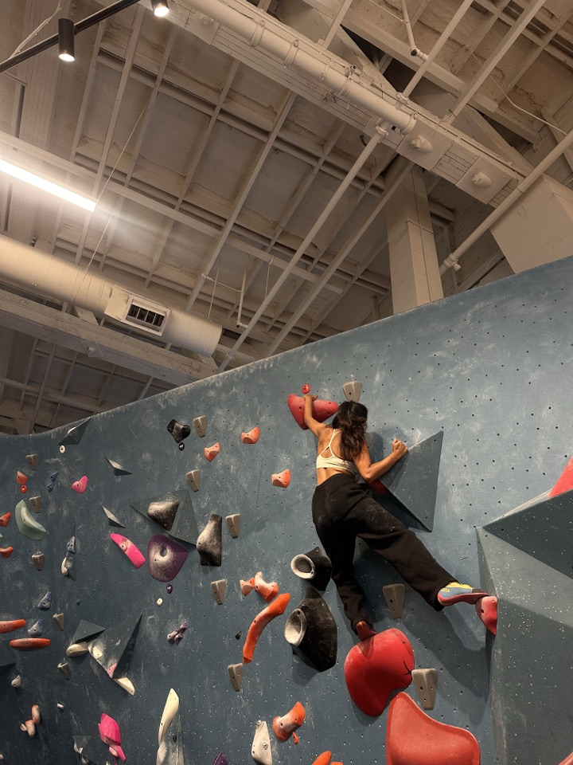
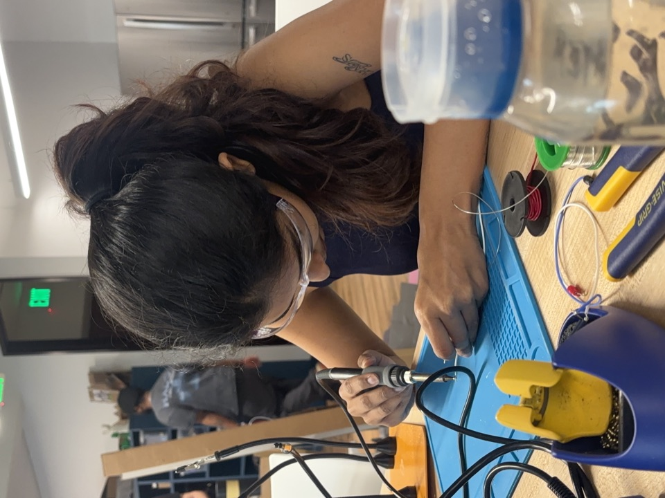
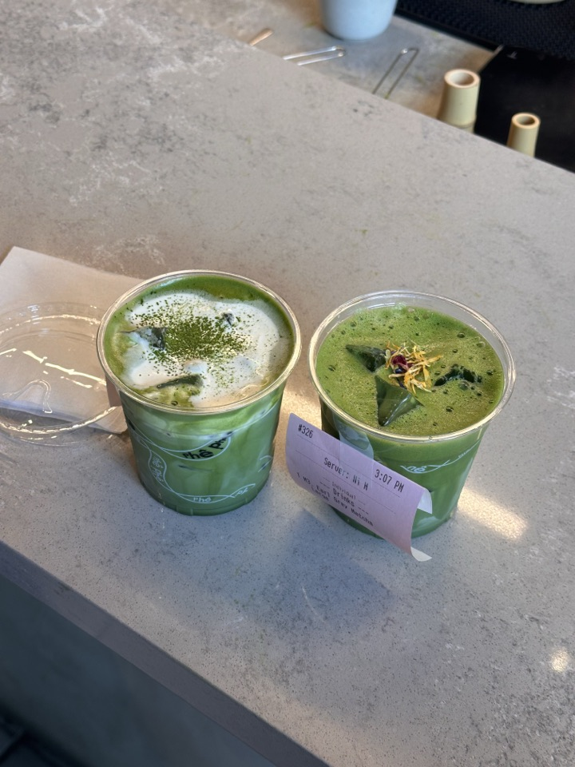
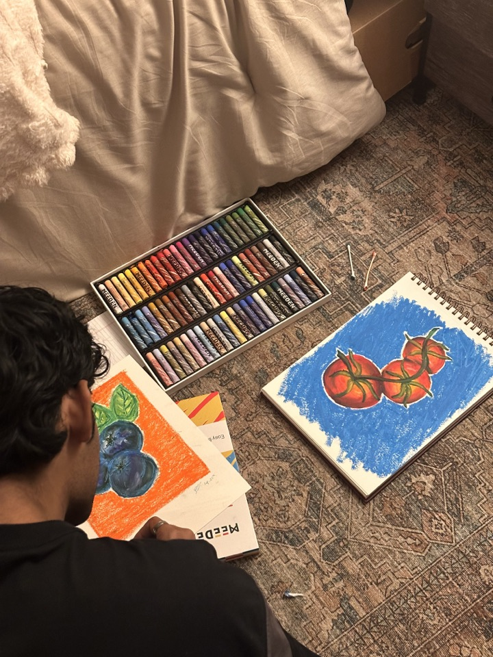
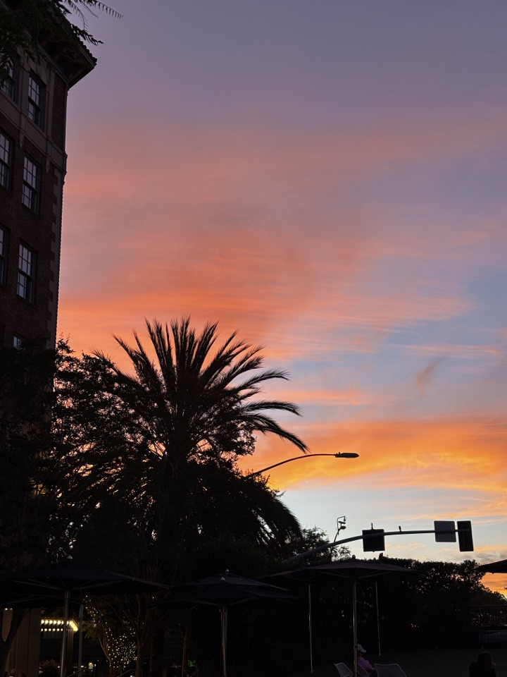
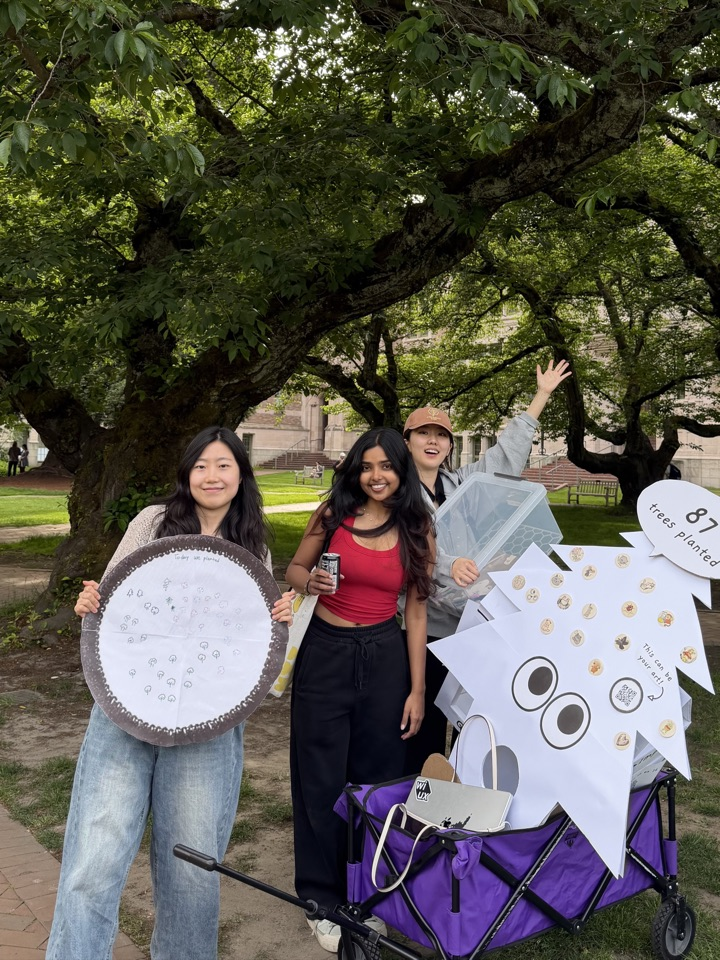
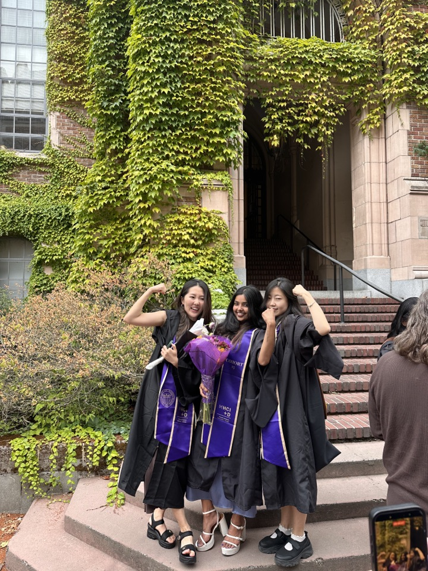
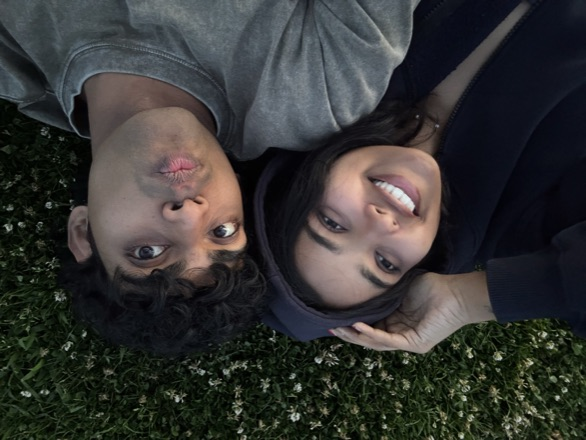
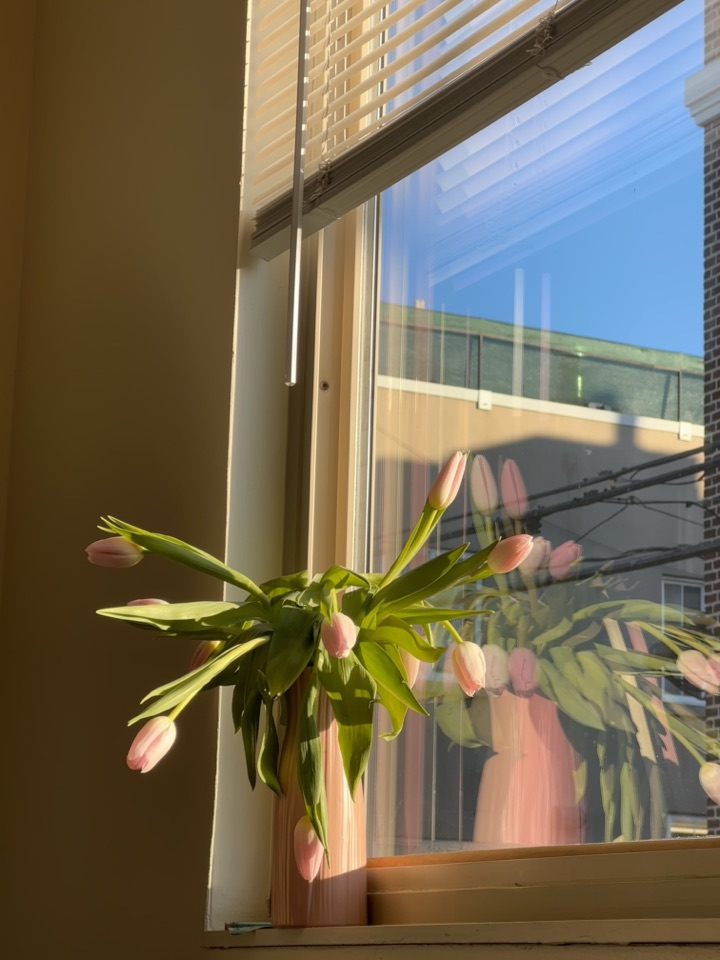
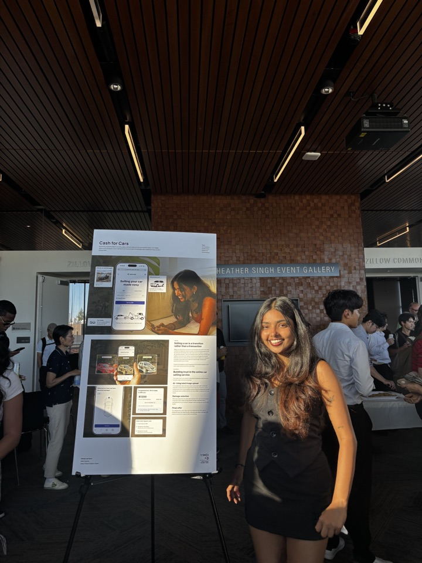
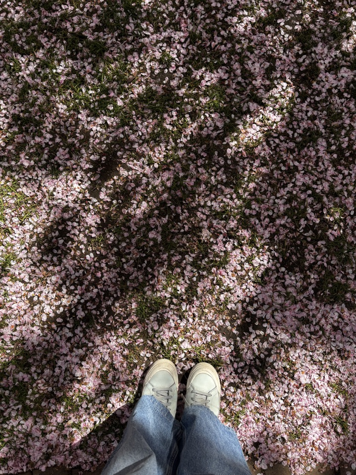
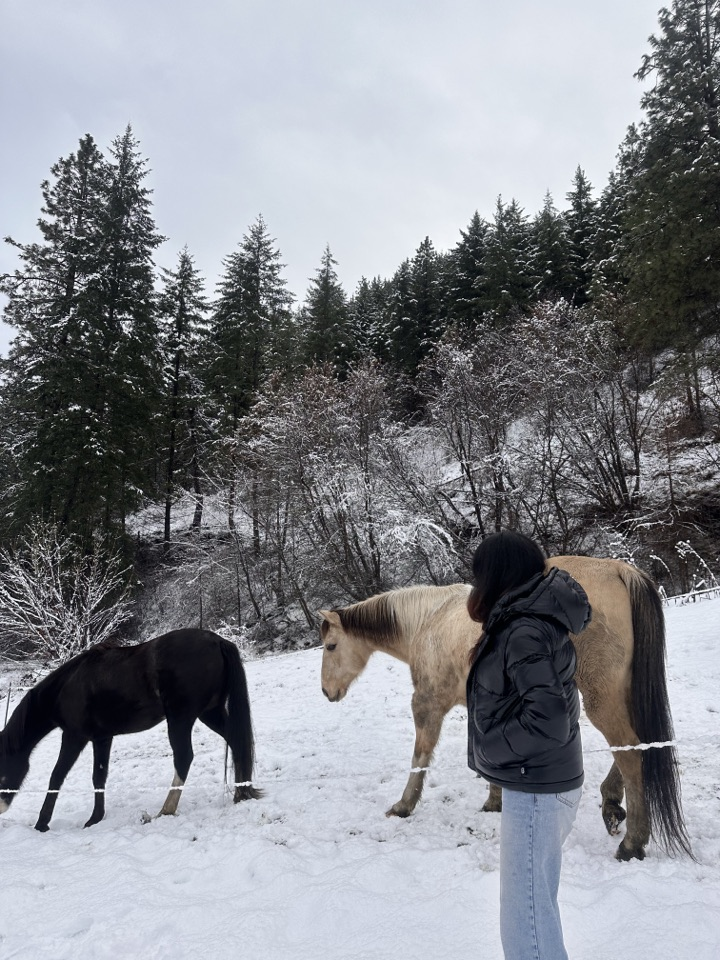
I love traveling… here’s a collection of coins I have collected over the years